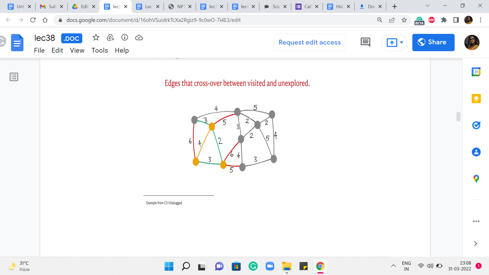
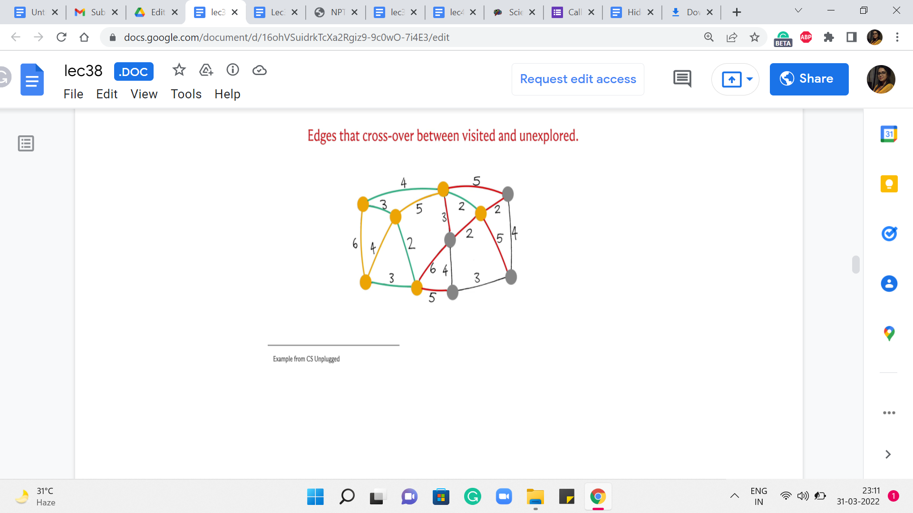
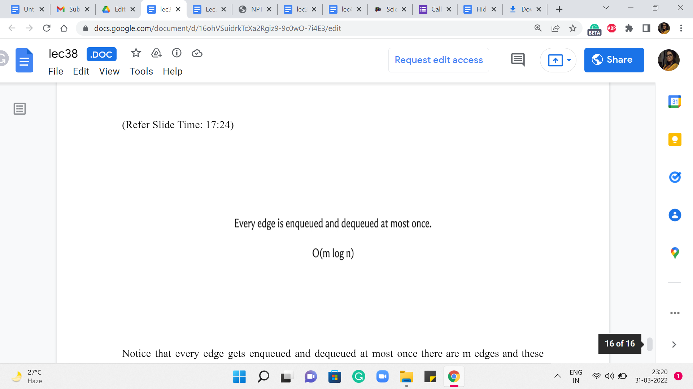

M 1 (Prim’s Algorithm)
Lecture - 38
Minimum Spanning Trees - Module 1 (Prim’s Algorithm)
Welcome back to the second segment of the first module on Minimum Spanning Trees. In this segment, I want to talk about Prim’s algorithm. And remember, from the previous segment, we talked about how most MST algorithms can be thought of as algorithms that build out a spanning forest step by step while making careful use of safe and useless edges. So, let us see how Prim’s algorithm realizes this framework.
(Refer Slide Time: 00:40, 00:59 & 01:19)


To begin with, we are going to start with the empty spanning forest, which is to say that the vertex set is simply the vertex set of G, and every vertex at the moment is isolated. What Prim’s algorithm is going to do is essentially try and build out one component starting from some specific vertex.
So, you can pick any vertex you like for this purpose. Let us just fixate on a vertex called ‘v.’ And let us call this vertex ‘T.’ That is to say, that is the spanning tree that we want to build out. So, this is a component that we want to continue focusing on, and (all of) Prim’s algorithm, the mechanics basically boils down to this.
So, we look at the safe edge incident on T, which is to say, let us look at the cheapest edge among all edges that have one endpoint inside T and the other outside. So, to begin with, once again, this is just going to be the cheapest edge that is incident on the vertex v. And that is what is going to get pulled into T. The other endpoint of this edge is going to now become a part of T. And, in a general step, you have built out some ‘component’ starting from this vertex v.
And you are going to look at all the edges that go out of this component, pick the one that has the least cost, and then add the vertex that is at the other end of this edge in component T. So, we continue doing this until T is fully fleshed out into a spanning tree, which is something that you get to know once T has ‘n minus 1’ edges. By this time, it would have automatically visited or accounted for all vertices being reachable from the vertex that you started with. Now, just to make sure that we are on the same page as to how this algorithm works, let us actually run it on an example.
(Refer Slide Time: 02:30)


 
Let us just pick up the example that we looked at in the first segment. So, here is the graph. And I have highlighted in yellow the vertex that is the vertex that we are going to start with. So, this is our vertex v. So, the vertices do not have labels here just to keep the slide a bit clutter-free. So, let me just explain how color coding works. So, the edges that have been marked red are going to represent edges that are under consideration in the current iteration, which is to say these are edges that have one endpoint inside T and the other endpoint outside of T.
Typically, what we will do is we will then highlight in green, the cheapest edge among all of these edges that are under consideration. And then, once we have identified this edge, we are going to bring in the vertex, which is at the other endpoint into the fold of T. These are vertices that you can think of as the visited vertices, the seen vertices. So, such witnesses will also be marked yellow. So, as and when we see more and more vertices as the component T bells out, all the vertices that belong to T will be marked yellow.
So, hopefully, that makes sense. Let us get started with the first step here. Notice that the edges under consideration are simply all the edges that go out of the vertex v. So, these are the highlighted edges here. And if you just read off the weights, you will see that the cheapest edge is the one that has weight 2. So, we bring in this neighbor into the fold. And now we see if we need to expand our set of edges that have one endpoint in the visited set and the other endpoint outside. And indeed, there are three such edges that need to be added.
So, these have been highlighted for you. Now once again, let us go over the edge weights of the red edges. And we see that there are two edges that have a weight of 3, and both of these are in competition for being the current cheapest edge. At this point, I am going to break the tie by picking the edge at the bottom and incorporating this vertex into the fold. Now notice that one of these red edges became yellow because this red edge is now no longer an edge that has one endpoint inside T and the other outside.
It has both of its endpoints inside T. So, we are going to mark it yellow as well. Now let us look at all the edges that are crossing T. So, there is one more that needs to be added. And once again, if you evaluate all the edge weights, you will see that now we have this other edge with a weight of 3 being the winner here. So, that brings in this vertex. And once again, we have more edges that cross now, at least one more. And this new edge is, in fact, the edge which has the smallest cost that is currently crossing. So, we use that to bring (in) this vertex into T. And now we have a few more edges that cross the cut.
(Refer Slide Time: 05:43)
 


And among these edges, among all the red edges right now, you can see that the next cheapest edge that gets chosen is the edge with a weight of 2. There is no contention here. It is the cheapest edge, and it brings in this vertex. And now you have all of these edges crossing the cut. And now, in fact, we have two edges that are both the cheapest from component T.
And we pick one of them. This one that is closer to the center – this brings in the vertex that is the center of your screen into the component T, and it also adds one edge to the cut. Now if you look at all the crossing edges, you see that there is an edge still of weight 2. So, that is the next cheapest edge to go with. It brings (in) the corner vertex into the fold and adds this edge to the cut. And now, among all the crossing edges, you again have a tie between the two edges that have a weight of 4.
So, let us break it by picking the vertex that is, once again, in the middle of this path at the bottom – this brings (in) this vertex into T. And at this point, you are going to have this edge crossing the cut, which would be in fact also the minimum edge for the current cut. And that is how the last vertex gets incorporated into your spanning tree. Now, you could try to rerun this simulation here by breaking ties differently, and you will see that you will end up with a different structure for the set of edges that witnessed the incorporation of vertices.
So, by the way, all of these edges that are marked green, which were the edges that triggered the incorporation of the next vertex, these trees very naturally form a spanning tree. And this is in fact the minimum spanning tree that is returned by Prim’s algorithm. And as I said, if you had broken the ties differently, you would end up with different tree structures. But notice that all of them will in fact have the same cost. It should be easy for you to believe that the set of edges that you get at the end is spanning and it is a tree. I think these are fairly intuitive properties of the set of edges that you finally get your hands on. But what is quite a bit more non-trivial is the fact that this is in fact the best you can do. So, for example, if you add up the costs here, I think it will amount to 25. But it is not trivial, even for this example, to convince yourself that this is the best that you can hope for, you can do a little bit of trial and error. And, you know, just try and see if you can improve on this.
But assuming that I have not made any mistakes in the simulation, this is going to be guaranteed to be the best that you can hope for because of the proof of correctness of Prim’s algorithm. So, this is a good point to remind you once again that in case you have not seen this proof before, although we will not be discussing it here, there are a number of pointers where you can find out more if you are so inclined. So, please do check either the course website or the description of this video for more. Now in the meantime, let us move on to the implementation of the ideas that we have discussed here.
Notice that we are repeatedly finding the minimum cost edge incident to some ‘component.’ So, it is intuitive that priority queues come in somewhere in the picture. And notice that in spirit, this does seem to follow a very Dijkstra-like pattern, where we are constantly evolving some collection of visited vertices. But unlike Dijkstra, we do not really have to relax any edges or update the weights. So, we do not have to worry about the fact that, in particular, the C++ priority queue interface does not offer us a way to update the values of the keys. It does not matter here because we will never need to. So, we are going to use a priority queue to store the edge weights. And we are just going to carefully try and understand what are the edges that are incident on the component T as we go along. So, let us take a look at the code here.
(Refer Slide Time: 09:46)

So, this is just an initialization of a taken array or a visited array. This just keeps track of which vertices have been visited so far by the algorithm. So, this array is basically the information about the yellow vertices from the previous simulation. So, initially, you could say that nothing is visited. And you could start things off by saying that the first vertex is visited. So, in this case, the first vertex is indexed by 0.
And we just said, taken[0] = 1 to indicate that the story has, in fact, started. Now I just want to initialize also the priority queue with the values of the edges that are incident to this first or source vertex. So, let me just go over all the neighbors of the vertex 0 that is what is happening in AL[0]. By the way, I should mention that we are just storing all the information about the graph as an adjacency list because that is just something that happens to be convenient for this.
So, we are just going to do the standard thing of visiting all the neighbors of the vertex 0 and loading up the weights of the corresponding edges into a priority queue, which has been initialized. Just before this code snippet, just make sure to initialize the priority queue so that it acts as a min-heap and not as a max-heap, which is the C++ default. Do make sure to take a look at the whole code in the official repository to look at the surrounding details of the initializations, and so on, especially if you are not sure about how to set it up so that it is a min-heap instead of a max-heap.
Alright. So, now that we are done with the first element in the priority queue let us do a little more initialization. So, we have the variables mst_cost, and then the variable num_taken both initialized to 0: mst_cost is pretty self-explanatory, it is going to store the cost of the solution; the variable num_taken is going to keep track of how many edges are in the spanning tree so far. This allows us to exit as soon as we have seen that we have picked up n-1 edges because that is a signal that your spanning-tree build-up is complete.
So, that gives us a way to exit the algorithm potentially earlier than waiting for the whole priority queue to be emptied out. So, that is why we have this extra variable here. You have to be careful about problems where you are handling multiple test cases. So, if you do this early exit, just make sure that you clean up the priority queue before you go to the next case. This is a very common source of bugs to have your adjacency lists or priority queues being corrupted with information from the previous test case.
So, do make sure to clear them out or re-declared them, especially when you are using this sort of optimization that does not automatically empty out the priority queue for you. Now let us get to the main loop that is at the heart of this algorithm. So, the way we are going to do this is to actually process the priority queue for as long as it has an edge on it with our check for, you know, getting out of this loop early, if we have actually built out the tree, as just described.
So, this is going to be our main outer loop. And what we are going to do is just repeatedly pull out the cheapest edges that we have in stock. Notice that one property of all the edges that get into the priority queue is that at least one of their endpoints is already in the set of the same vertices. That is how these edges got into the priority queue in the first place. This will become clearer when you see the entire body of the ‘while’ loop.
But that is just an invariant that we are going to maintain. With the initialization, this is definitely true. All the edges on the priority queue, in the beginning, are edges that have one of their endpoints in the source vertex and the source vertex as already seen, to begin with. And as I said, this is something that we will maintain as we go along. So, when we pull out the cheapest edge in the priority queue, notice that it already has the property that it is an edge that has at least one endpoint in the set of seen vertices.
But for this to be an edge that is of interest to us, we want to make sure that its other endpoint, in fact, is not seen so far. So, that is the first check that we want to implement. We want to make sure that take[u] is set to 0. So, if this is not the case, then we ignore this edge because this is an ‘edge,’ which has both of its endpoints in the component that we have built so far. And in the terminology that we discussed in the previous segment, this is a useless edge. So, we just want to have nothing to do with it. And that is why we just go back and continue with our loop.
On the other hand, if this edge actually lands at a vertex that is not yet seen, then that is an edge that is interesting to us. Notice that this is in fact the cheapest edge that crosses across from the seen territory to the unseen territory at the moment. So, this is essentially a green edge. Remember, every edge that we labeled green was a signal that this is the edge that is going to guide the incorporation of the next vertex.
So, this is the point where we have identified a green edge. And what we need to do is essentially look at the vertex that is at the other end of the green edge and make sure that it is incorporated. So, the first step to ensuring that this other vertex, which by the way is ‘u’ here is incorporated is by simply setting it is taken value to 1. So, that indicates that now this vertex has joined the club. The next thing that we want to do is to make sure that we update the cost of our solution with the cost of this edge.
So, this edge has a cost of ‘w’ that is what we get out of the priority queue. So, we add w to the mst_cost variable. And finally, what we want to do is actually identify any other red edges. So, remember what we did while we were doing the simulation when we brought in a new vertex was to check if there are any other edges that now go from the seen territory to the unseen territory because of the incorporation of this vertex.
So, what we are going to do is go over all the neighbors of this newly minted vertex, and check if any of those neighbors are unseen. That is, they have not been taken yet. Then these edges need to be pushed into our priority queue for consideration. So, that is what we are doing here. We are essentially processing this vertex to ensure that all of the edges (that are) incident on it are (being) now recognized in the system.
Now, once you are done with this, all you have to do is update the number of taken edges by 1 and implement the sanity check that we discussed. If at this point, you have taken ‘n-1’ edges already, then you can quit this loop, and you are done. And once you are out of the loop, of course, you can print the cost of the MST or, if required, you could write a loop to print all the edges that belong to the MST.
For this, you might need to do a little bit of extra bookkeeping within the ‘while’ loop just like you would do with something like Dijkstra. You could have a predecessor array that tells you about how each vertex got roped into the component T. And those are the edges that will basically form the MST for you. So, that is it. That is pretty much the entire algorithm.
(Refer Slide Time: 17:24)

Let us quickly talk about its running time. Notice that every edge gets enqueued and dequeued at most once there are ‘m’ edges and these enqueue and dequeue operations cost you log ‘n.’ This is the bulk of the cost of Prim’s algorithm. There are some costs associated with the initialization and so on. But those are all dominated by this m log n expression. So, it turns out that once we get to analyzing Kruskal’s algorithm, you are going to get a very similar running time.
So, if you are pressed for a choice, either algorithm would work out similarly in terms of performance. But for some problems, it is just more natural to use one algorithm compared to the other and that will become evident as you practice through a number of problems. So, on that note, I would like to conclude our discussion on Prim’s algorithm and I will see you in the final segment for this module where we talk about Kruskal’s algorithm, which is a different way of building up a minimum spanning tree!